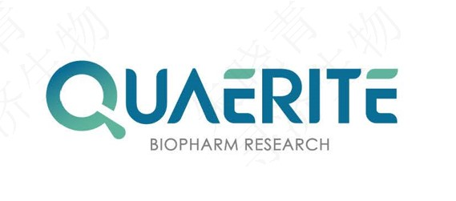
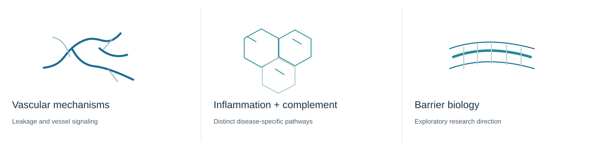
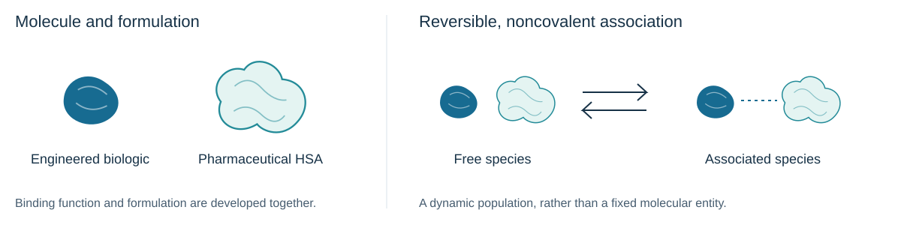
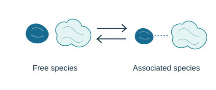
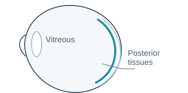

Disease-focused design
We select therapeutic mechanisms for defined disease settings, recognizing that incomplete response can have different causes.

QUAERITEFor the moments we want to keep seeing.
Company
Our approach
We select therapeutic mechanisms for defined disease settings, recognizing that incomplete response can have different causes.
Molecular architecture and formulation must support exposure at the tissues where a biologic is intended to act.
Each candidate follows its own development path. Efficacy, safety and durability must be established for each program.

OcuHLE-X
Molecule and formulation.
Designed together.



Concept schematic; not to scale. Symbols do not depict molecular structure or a fixed binding ratio.
Pipeline
Investigational programs with distinct biological rationales and development paths.
Review snapshot: 5 October 2026. QBR202 stage confirmed by the company owner. Other stages follow the September company chart. QBR210 is included with its stage omitted, as instructed by the company owner.
Research
Selected peer-reviewed studies describe distinct research approaches and models. They should be read within their experimental scope.
Our people
Partner with Quaerite
2/F, Building C9, Yiyuan, No. 65 Xingshikou Lu, Haidian District, Beijing, China.